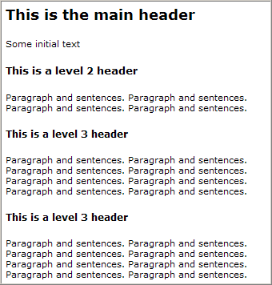

Web 品质 - 重要的 HTML 元素
对于提升 web 品质，<DOCTYPE>、<title> 以及 <h1> 都是重要的标签。
<DOCTYPE> 元素
Doctype means a "document type declaration" (DTD).
所有的 HTML 和 XHTML 页面都应当使用 <Doctype> 元素来定义遵照何种 HTML 版本。
doctype 定义了您正在使用的 HTML 版本，并为浏览器提供重要的信息以便其更快速一致地呈现您的页面。
文档类型声明同时也使验证软件可以对页面的语法进行检查：
HTML 4.01 Strict, Transitional, Frameset
<!DOCTYPE HTML PUBLIC "-//W3C//DTD HTML 4.01//EN" "http://www.w3.org/TR/html4/strict.dtd"> <!DOCTYPE HTML PUBLIC "-//W3C//DTD HTML 4.01 Transitional//EN" "http://www.w3.org/TR/html4/loose.dtd"> <!DOCTYPE HTML PUBLIC "-//W3C//DTD HTML 4.01 Frameset//EN" "http://www.w3.org/TR/html4/frameset.dtd">
XHTML 1.0 Strict, Transitional, Frameset
<!DOCTYPE html PUBLIC "-//W3C//DTD XHTML 1.0 Strict//EN" "http://www.w3.org/TR/xhtml1/DTD/xhtml1-strict.dtd"> <!DOCTYPE html PUBLIC "-//W3C//DTD XHTML 1.0 Transitional//EN" "http://www.w3.org/TR/xhtml1/DTD/xhtml1-transitional.dtd"> <!DOCTYPE html PUBLIC "-//W3C//DTD XHTML 1.0 Frameset//EN" "http://www.w3.org/TR/xhtml1/DTD/xhtml1-frameset.dtd">
XHTML 1.1 DTD
<!DOCTYPE html PUBLIC "-//W3C//DTD XHTML 1.1//EN" "http://www.w3.org/TR/xhtml11/DTD/xhtml11.dtd">
<title> 元素
<title> 元素是最重要的 HTML 元素之一。它的主要功能是描述网页的内容。
即使标题不是网页的一个可见的部分，它对于提升网站的品质依然是重要的，这是因为它在以下位置都是可见的：
- 搜索引擎列表
- 窗口的标题栏
- 用户的书签中
标题应当尽可能地短，并具有可描述性。
当某个用户在 internet 上搜索网站时，大部分搜索引擎都会在搜索结果中显示出网站的标题。请确保标题与网页的内容是吻合的。这样的话用户有更多的可能通过点击这些链接来访问到你的网站。
当用户访问您的网站时，在窗口的标题栏中标题是可见的。请确保即使窗口被最小化，标题同样能起到描述网站内容的作用。
在用户访问你的网站之后，网页的标题会存储于历史文件夹 (用户甚至会把网页收藏到他的收藏夹中）。为了后续的成功访问，同样请确保标题可以清楚地描述您的网站。
优秀的标题：
<title>HTML 教程</title> <title>XML 简介</title>
差劲的标题：
<title>简介</title> <title>章节 1</title> <title>W3CSchool 拥有一整套组织良好、易于理解的 HTML、CSS、JavaScript、 DHTML、XML、XHTML、WAP、ASP、SQL 教程，并包含非常多实例和源代码。</title>
<h1> 元素
<h1> 元素用来描述网页中最上层的标题。
由于一些浏览器会默认地把 <h1> 元素显示为很大的字体，因此会有一些 web 开发者使用 <h2> 元素代替 <h1> 元素来显示最上层的标题。这样做不会对读者产生影响，但会使那些试图“理解网页结构”的搜索引擎和其他软件感到迷惑。
请确保把 <h1> 用于最顶层的标题，<h1> 和 <h2> 用于较低的层级。
可以试着根据此模版来构造您的网页：
如果您不喜欢默认的标题字体尺寸，可以使用样式或样式表来改变。